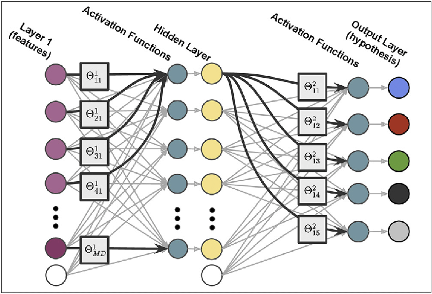

In the project, I developed an algorithmic solution to efficiently find optimal paths in complex environments. By implementing the RRT algorithm and incorporating various functionalities like random point generation, obstacle detection, and parameter tuning, I facilitated effective path planning from a starting point to a desired goal.
In the project, I developed a robust system leveraging computer vision techniques to estimate the pose of a camera using stereo images. By implementing feature point tracking and utilizing stereo vision, I enabled accurate localization and navigation for autonomous systems, eliminating the dependency on external sensors like GPS.

In the project, I implemented PID and Pure Pursuit algorithms to enable accurate trajectory tracking for autonomous vehicles. By tuning the control parameters and integrating these algorithms, I successfully achieved precise steering control while ensuring adherence to a predefined reference trajectory, showcasing my proficiency in control systems and navigation algorithms.

In the project, I built a powerful classification model by implementing backpropagation with gradient descent and employing L2 regularization. Through performance comparison with other neural network architectures, showcasing my expertise in developing effective machine learning models for classification tasks.

In the project, I developed and implemented machine learning models for analysis of diabetes dataset, demonstrating proficiency in classification and regression techniques. Employed Linear Discriminant Analysis (LDA) and Ridge Regression to achieve high accuracy and effectively address overfitting concerns, contributing to the advancement of data-driven medical research.

In the project, I implemented an algorithm to detect the corners of a chessboard in images using OpenCV in Python.
In the project, I developed a face detection and clustering system using Haar cascade classifier, LBP feature extraction, and PCA dimensionality reduction.